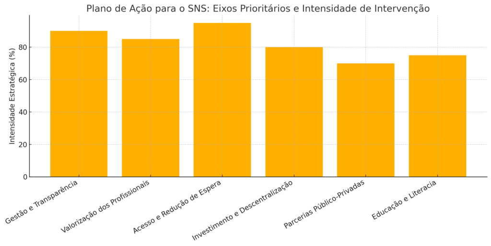

Plano de Ação para o SNS: 2025-2030
Publicado em 2025-03-23 12:40:54
Plano de Ação para o SNS: 2025-2030 – Rumo à Saúde com Dignidade e Eficiência
1. Reforço da Gestão e Transparência
- Criação de uma Agência Nacional de Gestão Hospitalar (ANGH) para padronizar processos, melhorar a alocação de recursos e auditar regularmente.
- Publicação trimestral de indicadores de desempenho (consultas, cirurgias, tempos de espera, absentismo, etc).
- Digitalização completa dos processos administrativos e clínicos.
2. Valorização dos Profissionais de Saúde
- Carreira médica e de enfermagem com progressão transparente e baseada em mérito e formação contínua.
- Aumento salarial faseado para setores críticos, com especial enfoque nas urgências, medicina geral e familiar.
- Medidas contra o burnout: horários mais flexíveis, apoio psicológico e bonificação por dedicação exclusiva.
3. Melhoria do Acesso e Redução das Listas de Espera
- Plano Nacional de Intervenção Rápida (PNIR): contratação temporária de profissionais para redução urgente de listas.
- Teleconsulta massificada com integração de inteligência artificial para triagem e apoio ao diagnóstico.
- Horário alargado em centros de saúde de maior pressão populacional.
4. Investimento e Descentralização
- Fundo Nacional para Infraestruturas de Saúde (FNIS) para modernização de hospitais e centros de saúde do interior.
- Transferência progressiva de competências de gestão para consórcios regionais ou autarquias-piloto.
5. Parcerias Público-Privadas com Regras Claras
- Protocolos de complementaridade com setor privado, para cirurgias de baixa complexidade e exames de diagnóstico, com plafonds públicos definidos.
- Sistema de controlo automático de faturação e desempenho com inteligência artificial.
6. Educação e Literacia em Saúde
- Campanhas de literacia em saúde nas escolas e media públicos.
- Apps educativas e preventivas integradas com o registo de saúde.
- Apoio comunitário para a gestão de doenças crónicas.

Por : Francisco Gonçalves
Créditos para IA, DeepSeek e chatGPT (c)